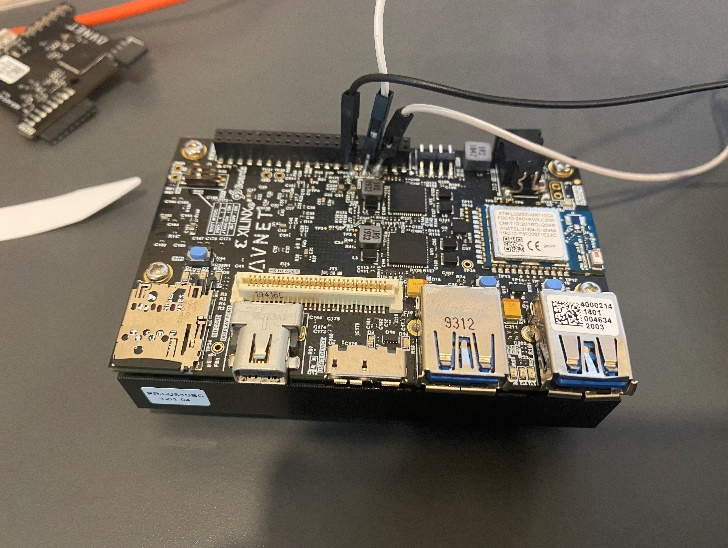

Using the Manhattan PMIC¶
Overview¶
This tutorial goes a little more in depth regarding the use of the I2C interface. In this tutorial, you can actually access important power consumption metrics without the use of the Power Advantage Tool GUI. The process involves directly communicating with the on-board Infineon measurement chip, the Manhattan PMIC, to extract measurements, including voltage, current draw, and overall power consumption of the Ultra96v2 board. Using this Manhattan PMIC (part number IR38060) is an alternative to the Power Advantage Tool, which utilizes the other onboard PMICs to gather relevant measurements. If you want to use the Manhattan PMIC and not the Power Advantage Tool, this is the tutorial for you!
Hardware Requirements¶
Ultra96v2 board
Bus Pirate

Three wires, where one side is a male header and the other side is a female header
USB to USB MINI-B cord

Step-by-step Walkthrough¶
Note
These first few steps involve setting up the I2C for the Ultra96v2 board. The Power Advantage Tool included these steps, so if you have already completed that tutorial you may skip to step 3.
To start, it is necessary to solder the three male headers of the separate wires to the I2C interface on the Ultra96v2 board. The soldering job is shown in the following figure. The left black wire is SCL, the middle white wire is SDA, and the right grey wire is GND.

Next, connect the female headers of these wires to the bus pirate. The SCL wire connects to the
CLKpin, the SDA wire connects to theMOSIpin, and the GND wire connects to theGNDpin. This wiring is shown in the following figure. Once the wires are connected, connect the USB MINI-B port of the bus pirate to the USB port on the host computer using the USB MINI-B to USB cord. Do not forget to turn on your device!
Now that you have successfully completed the hardware setup of the project, you can now move on to configuring the I2C communication with the Infineon measurement chip. First, make sure that you have TeraTerm downloaded (or equivalent). You can download TeraTerm download here.
With TeraTerm downloaded, open it and you should see the screen shown in the following figure. This screen is where you configure the COM port for the I2C communication. In this example, the COM port for I2C was located at Port 23. Select the Serial option and click OK.
To correctly configure the Serial port for I2C, make some changes. Click on the Setup tab at the top of your TeraTerm window and navigate to the Serial port… option. Click on it.
The one edit you will have to make is changing the Speed, or baud rate, of the connection. It will typically default to a baud rate of 9600, but for this instance we want a baud rate of 115200. The configuration for this is shown in the following figure. Once you make these edits, click New setting.
Once you have completed the previous step, you might see a blank workspace. If this is the case, hit the Enter button on your keyboard. You should see a prompt that says “HiZ>” or some other mode i.e. UART, SPI, I2C. This is shown in the following figure.
Now we are ready to change the mode of the device. Type the letter m into the prompt and hit the Enter button. It should come up with the following dialog box.
From the above dialog box, select I2C. Type 4 into the prompt and hit the “Enter” button. It should come up with the following prompt.
Next, select the speed of the I2C communication. For this project, a speed of 400 KHz is desired, so type 4 into the prompt and hit the “Enter” button. It should come up with the following. Even if your mode was “I2C>” in Step 9, Steps 9-12 are still necessary to ensure that the correct speed is selected for your interface.
To search for available address spaces that are connected to your COM port, type (1) into the prompt and hit the Enter button. The available address spaces should be shown in the following figure.
Caution
Do not forget the parentheses as they are essential.
If you want to check to see which address space correlates to the PMBus used to take measurements, type the following command: [0x8a 0x99 [ 0x8b r:3 ]. This command is used to confirm the manufacturer ID of the device. The PMBus used in this example will return three bytes: 02 52 49. If you do not see these values returned, try looking at the other address spaces by entering the following commands:
[ 0x86 0x99 [ 0x87 r:3 ][ 0x88 0x99 [ 0x89 r:3 ]
The two commands above look at the manufacturer ID of the other address spaces. Whichever address space returns 02 52 49 is the one you want to use. The correct return values are shown in the following figure.
Next, gather readings for power. To do this, read both the voltage of the device as well as the current of the device. As a review, power, measured in watts, is equal to voltage, measured in volts, multiplied by current, measured in amps. So first, extract the voltage. To do this, enter the following command:
[ 0x8a 0x8b [ 0x8b r:2 ]
The result of entering this command is shown in the following figure.
You will get 0x0512 as your word. It is read backwards, so the first byte you receive is the least significant byte and the second byte you receive is the most significant byte. Confusing, yes, but that is how it is formatted for the PMIC being used. Don’t forget this value!
Next, extract the current reading for your device. To do this, enter the following command:
[ 0x8a 0x8c [ 0x8b r:2 ]
The result of entering this command is shown in the following figure.
You will get 0xE009 as your word. Like the voltage, it is read backwards, so the first byte is the LSB and the second byte is the MSB. Don’t forget this value!
Now that you have your readings, use a Linear Data Format that represents these hexadecimal values as decimal values. The Infineon part that you are using has a document that tells you how to convert from hex to decimal, and the formatting is shown in the following figure.
From this description, you can see that any command run that reads voltage values uses 16-bit linear data format, while all other commands use 11-bit linear data format. Convert the values from hex to decimal:
For voltage, the 16-bit linear data format means that you take the hex value as an unsigned 16-bit value, convert that to unsigned decimal, and then multiply it by 2^(-8). This is according to the 16-bit linear data format shown above. Converting 0x0512 to binary, you get 0000010100010010, which as an unsigned decimal number is 1298. If you multiply 1298 by 2^(-8), the voltage is equal to 5.0703125 V. This aligns with what is expect! The calculation is shown in the following figure.
Next, take a look at current. Using the 11-bit linear data format now, convert your hex word to binary, and use the five MSBs as a signed decimal value that correlates to your exponent as well as use the 11 LSBs as a signed decimal value that correlates to your mantissa. Both of these values will use 2s complement for their notation. Then, plug these into the equation Y * 2^(N), where Y is the 11-bit mantissa and N is the 5-bit exponent. Converting 0xE009 to binary, you will get 1110000000001001. So, the 5 MSBs are 11100, which equals -4, and the 11 LSBs are 00000001001, which equals 9. Plugging these into our equation, you should get 9 * 2^(-4), which is equal to 0.5625 A. The calculation is shown in the following figure.
Now that you have your voltage and our current, you can determine your overall power. Multiplying 5.0703125 V x 0.5625 A gives an overall power of 2.852050781 W. The calculation is shown in the following figure.
Now, if you wanted to see changed to this overall power reading, you can change the number of CPU cores that are enabled on your device. If you want to take it this far, you can access your board through JTAG/UART. If you have Petalinux running on your device, you can communicate directly with the device via PetaLinux commands, turning CPU cores off and on. To do this, let’s setup our COM port for JTAG/UART.
Note
This step assumes you have a working PetaLinux image burned on your SD card and you are booting your device in SD
mode.
First, it is necessary to open a separate COM port. In TeraTerm, if you want to do this, go to File → New connection. This step is shown in the following figure.
You will be redirected to a page where you can select your new connection type. Select Serial, and select the USB Serial Port that matches your UART connection. In this example, this was COM4. Click OK when you are ready.
Similar to last time when you set up the I2C COM port, you will have to change the baud rate for this COM port as well. To navigate there, go to Setup, and click on the Serial port option.
Now you will see the interface where you can adjust the baud rate. Like the I2C COM port, set the baud rate to 115200. Other than this, no other changes should be necessary. The configuration should be like what is shown in the following figure.
With the baud rate set, Petalinux should boot. If it does not boot immediately, reset your Ultra96v2 board by hitting the reset button on your board. PetaLinux will boot up, and it will look like what is shown in the following figure.
Now, to edit your CPU core usage, type the following command:
yes > /dev/null &
This will turn on one CPU core. Each core takes up 25% of the overall usage, so you should start at 0% and by typing this command once, your overall usage should jump to 25%. You can type this command up to four times, allowing you to set your CPU usage to 0%, 25%, 50%, 75%, and 100%.
If you want to see the usage of your CPU, type the following command:
topThis top command will bring up a graphic showing your CPU usage, which can be seen at the top left of the graphic. The graphic looks like what is shown in the following figure. In this example here, you can see that the CPU usage is 24.9%.
It is important to note that opening up this graphic disallows you from sending more commands. If you want to return to the command line to continue entering commands, you will need to CTRL-C.
If you want to terminate your CPU cores and reset the overall usage to 0%, type the following command:
killall yes
Use this if you want to reset usage so you can reconfigure the CPU cores.
Now that you know how to change the CPU core usage, you can use this information to see how increasing CPU core usage will impact the overall power of the device. Play around with the CPUs, re-measuring your voltage and current readings as discussed in steps 15-19 and seeing how power changes with different core usage. Now that you know how to utilize the Manhattan PMIC on the Ultra96v2 board, you have completed this tutorial.